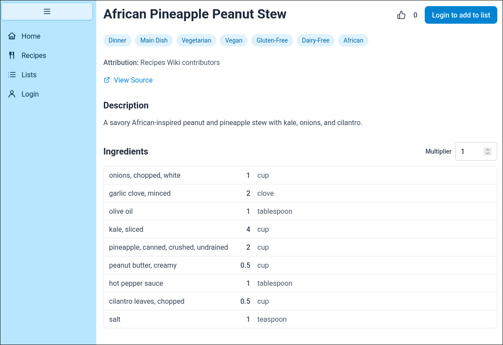
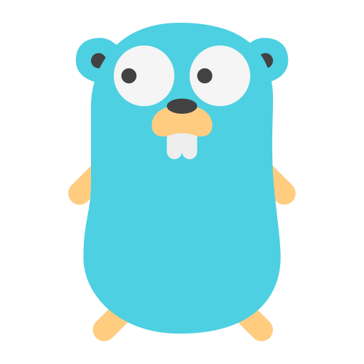
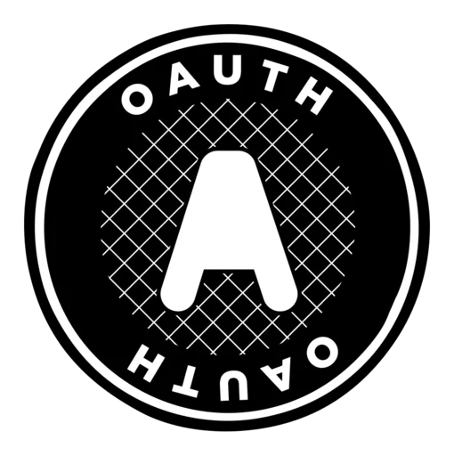

Hi, I'm Joseph West
A Biochemist turned Software Engineer
While completing my biochemistry degree in order to pursue a career in the medical field, I got introduced to programming and fell in love with it. Having deciding that software engineering is what I want to do as a career, I am now graduating with my second bachelor's degree in computer science in December 2026.
Over 5 years of consistent programming, I have developed many interests in computer science. These include game-development, finance, full stack web, database design, and dev ops. I know I always have much more to learn and am very excited to do so.
Technologies I'm focused on
Recent projects
Recipe List

A web app hosting many recipes and streamlining the process of shopping for their ingredients with a fully integrated grocery list application. Has many advanced features including automatic unit conversions and unification for all ingredients.

Schwab Portfolio Manager

A command line application that I use to execute trades in my Charles Schwab investment accounts, investing cash and rebalancing assets in order to execute my personal investment strategy


